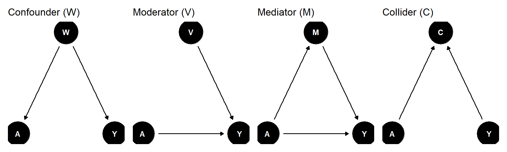
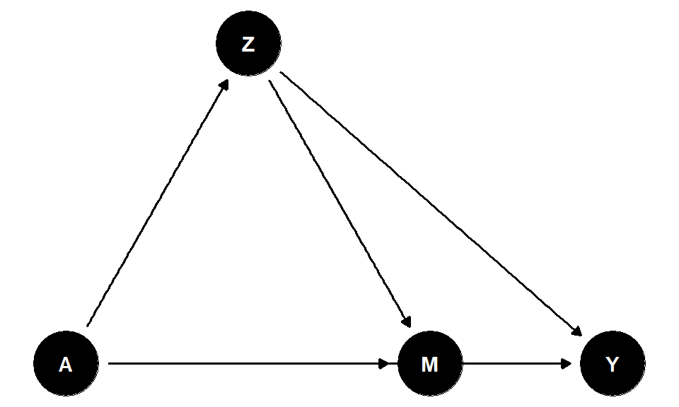
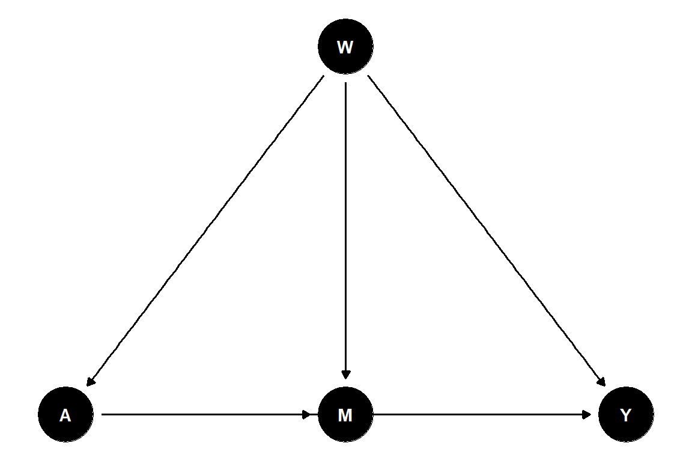
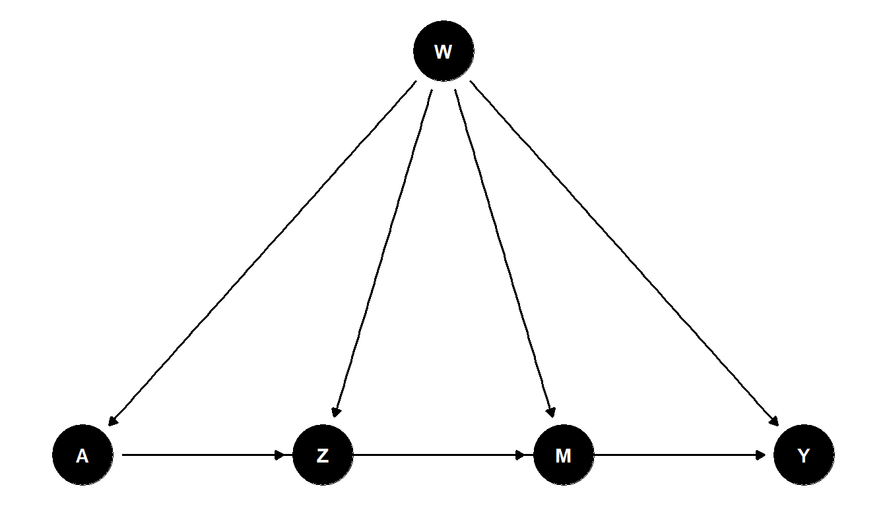
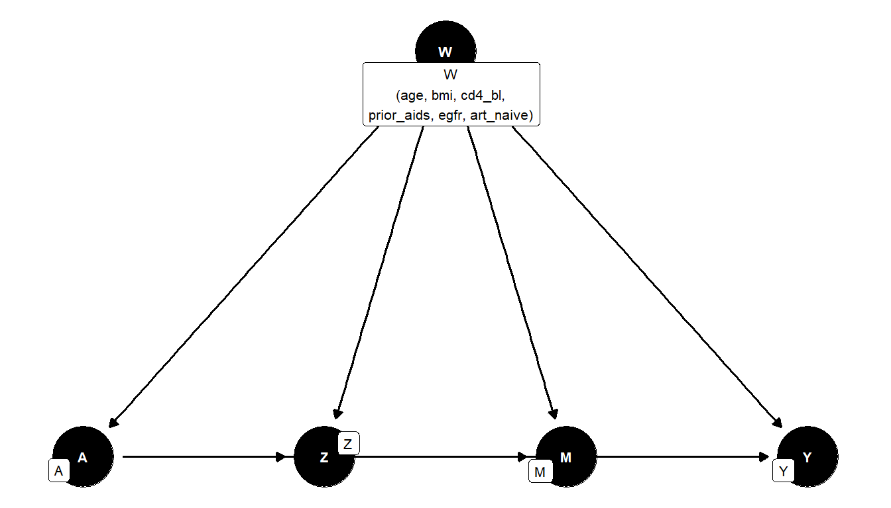
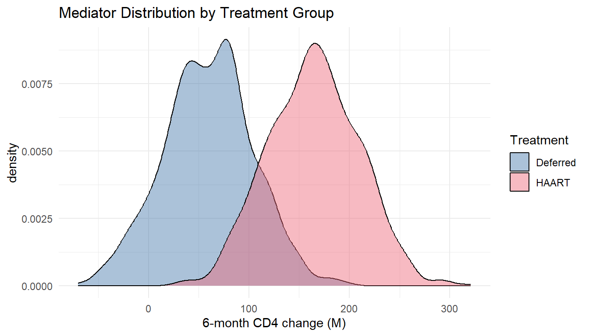
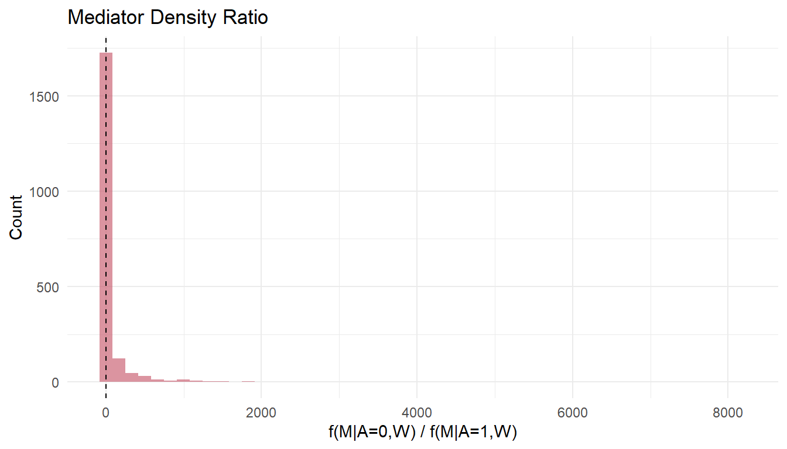
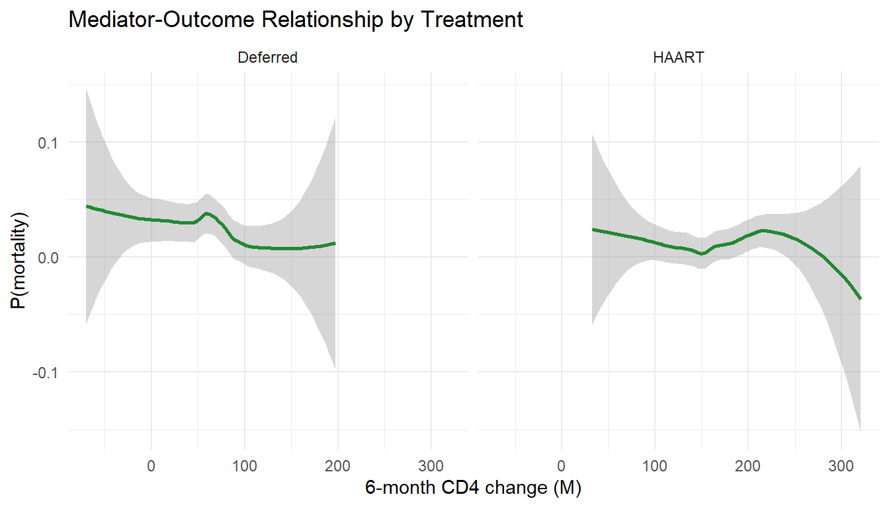

Decomposing total effects into direct and indirect pathways
In development
This chapter is under active development. Content may be incomplete, change substantially, or contain placeholder material.
Estimated reading time: 60 minutes
20 Why This Matters
Readers who have worked through the LMTP adherence case study in Chapters 3.3–3.3b will recognize the idea of decomposing drug effects into adherence-mediated and pharmacological components. That decomposition was informal: it used distribution shifts to approximate a controlled direct effect. This chapter provides the formal mediation framework that places those intuitions on rigorous causal footing, with proper identification conditions and semiparametric efficient estimation (Laan and Rose 2011).
In pharmacoepidemiology, we often want to know not just whether a drug works, but how it works. Does dapagliflozin reduce cardiovascular events because it lowers blood pressure (indirect effect through the mediator), because it improves glucose control, or through some other pathway (direct effect)?
Mediation analysis decomposes a total causal effect into the part that operates through a specified intermediate variable (the indirect effect) and the part that does not (the direct effect). Getting this decomposition right requires careful attention to the estimand, the causal model, and the assumptions that connect the two. This chapter walks through the logic and implementation of TMLE-based mediation using the crumble R package.
What you will learn:
How to specify a mediation question as a formal causal estimand and why the choice of estimand matters.
The assumptions required for identification, and what breaks when they fail.
How TMLE-based estimation with cross-fitting and flexible learners works for mediation.
How to use the crumble package to estimate natural, randomized interventional, and recanting-twins effects.
How to interpret and report mediation results responsibly.
Sources and scope
This chapter is educational. Causal conclusions depend on identification assumptions (consistency, exchangeability, positivity) and on diagnostic evidence that the data support the target estimand. The worked examples use simulated data with known ground truth; real analyses require subject-matter justification for every assumption.
Key references: Zheng & van der Laan (2012), VanderWeele (2015), Díaz & Hejazi (2020), Robins & Richardson (2010), Williams & Díaz (2024, crumble). Full citations appear at the end.
21 Clinical Motivation
21.1 The Pharmacoepidemiologic Question
SGLT2 inhibitors (like dapagliflozin) have shown surprising cardiovascular benefits in type 2 diabetes trials. A natural follow-up question:
How much of dapagliflozin’s effect on reducing MACE operates through HbA1c reduction (the glycemic pathway), and how much operates through other mechanisms (blood pressure, weight loss, direct cardiac effects)?
This matters for labeling, for understanding whether other glucose-lowering drugs should have similar benefits, and for guiding future drug development.
A mediator sits on the causal pathway from treatment to outcome. But several other variable roles are easy to confuse with mediation.
Show code
dag_confounder <-dagify(A ~ W, Y ~ W,coords =list(x =c(W =1, A =0, Y =2), y =c(W =1, A =0, Y =0)))dag_moderator <-dagify(Y ~ A + V,coords =list(x =c(A =0, V =1, Y =2), y =c(A =0, V =1, Y =0)))dag_mediator <-dagify(M ~ A, Y ~ A + M,coords =list(x =c(A =0, M =1, Y =2), y =c(A =0, M =0.5, Y =0)))dag_collider <-dagify(C ~ A + Y,coords =list(x =c(A =0, C =1, Y =2), y =c(A =0, C =0.5, Y =0)))p1 <-ggdag(dag_confounder) +theme_dag() +labs(title ="Confounder (W)")p2 <-ggdag(dag_moderator) +theme_dag() +labs(title ="Moderator (V)")p3 <-ggdag(dag_mediator) +theme_dag() +labs(title ="Mediator (M)")p4 <-ggdag(dag_collider) +theme_dag() +labs(title ="Collider (C)")library(patchwork)p1 + p2 + p3 + p4 +plot_layout(nrow =1)

Figure 22.1: Four fundamental variable roles in causal diagrams
A confounder is a common cause of treatment and outcome. Adjusting for it removes bias.
A moderator modifies the size of the treatment effect (interaction) but is not on the causal pathway.
A mediator is on the causal pathway from treatment to outcome. It is caused by treatment and in turn causes the outcome.
A collider is caused by two variables. Conditioning on a collider opens a spurious path.
Temporality is essential. A variable can only mediate the treatment effect if it occurs after treatment and before the outcome. Adjusting for a post-outcome variable or a cross-sectionally measured variable as if it were a mediator is a common error that can introduce bias rather than remove it.
The intermediate confounder problem
A variable \(Z\) that is affected by treatment and confounds the mediator-outcome relationship creates the hardest problem in mediation analysis. If \(Z\) exists and you ignore it, your decomposition is biased. We return to this below when choosing the estimand.
Show code
dag_ic <-dagify( Z ~ A, M ~ A + Z, Y ~ A + M + Z,coords =list(x =c(A =0, Z =1, M =2, Y =3),y =c(A =0, Z =0.5, M =0, Y =0) ))ggdag(dag_ic) +theme_dag()

Figure 22.2: Intermediate confounder Z: affected by A, confounds M → Y
23 Mediation Analysis: The Causal Roadmap
23.1 Step 1: Define the Estimand
Mediation decomposes a total effect into pieces. But there are several competing definitions, and the choice matters because they require different assumptions.
Natural direct and indirect effects (NDE/NIE). The most common definitions. In plain language, the NDE captures the part of the treatment effect that bypasses the mediator entirely, while the NIE captures the part that works through the mediator. Together they add up to the total effect.
The NDE asks: what is the effect of treatment if we could hold the mediator at the value it would have taken under control? The NIE asks: what is the effect of shifting the mediator as treatment would, while keeping treatment on? These decompose the total effect: \(\text{TE} = \text{NDE} + \text{NIE}\).
The trouble is that \(Y(1, M(0))\) is a cross-world quantity that combines treatment from one “world” (\(A=1\)) with a mediator value from another (\(A=0\)). This requires a strong, untestable assumption (no treatment-induced mediator-outcome confounding).
The natural indirect effect answers: how much of the total effect operates through the mediator? In the dapagliflozin example, the NIE quantifies how much of the cardiovascular benefit is attributable to HbA1c reduction specifically.
Randomized interventional effects (RIE). Instead of setting \(M\) to a specific counterfactual value, we draw \(M\) from its distribution under control. Think of this as asking: “What would the outcome look like if we kept the treatment on, but randomly reassigned each patient’s mediator value from the pool of mediator values seen under the control condition?” This avoids the cross-world problem by using distributions rather than fixed individual values.
where \(G_a\) denotes a random draw from \(P(M \mid A = a, W)\). These do not require cross-world quantities and are identified under weaker conditions.
Recanting twins (RT). When there is an intermediate confounder \(Z\) (affected by treatment, confounding the mediator-outcome path), even randomized interventional effects need further care. The recanting-twins approach (Robins & Richardson, 2010) handles this by decomposing the effect into path-specific components using two independent “copies” of the treatment.
Which estimand should you choose?
If you are confident there is no intermediate confounder (no \(Z\)), natural effects ("N") are the most interpretable and standard choice.
If intermediate confounding is plausible or you want weaker assumptions, randomized interventional effects ("RI") are a good default.
If you have a measured intermediate confounder\(Z\) and want to decompose the effect further, recanting twins ("RT") handles this explicitly.
For this tutorial, we will estimate all three to compare.
23.2 Step 2: Causal Model and Time Ordering
The mediation DAG for our example:
Show code
dag_simple <-dagify( A ~ W, M ~ A + W, Y ~ A + M + W,exposure ="A", outcome ="Y",coords =list(x =c(W =1, A =0, M =1, Y =2),y =c(W =1, A =0, M =0, Y =0) ))ggdag(dag_simple) +theme_dag()

Figure 23.1: Simple mediation DAG: W confounds all relationships, A affects Y directly and through M
The time ordering must be: \(W\) (baseline) \(\to\)\(A\) (treatment assignment) \(\to\)\(M\) (6-month HbA1c) \(\to\)\(Y\) (1-year MACE). This ordering is not negotiable. If \(M\) is measured after \(Y\), or if \(A\) and \(M\) are measured simultaneously, the decomposition is not credible.
When we add an intermediate confounder \(Z\) (e.g., blood pressure change caused by treatment, affecting both mediator trajectory and outcome):
Show code
dag_with_z <-dagify( A ~ W, Z ~ A + W, M ~ A + Z + W, Y ~ A + M + Z + W,exposure ="A", outcome ="Y",coords =list(x =c(W =1.5, A =0, Z =1, M =2, Y =3),y =c(W =1, A =0, Z =0, M =0, Y =0) ))ggdag(dag_with_z) +theme_dag()

Figure 23.2: Mediation DAG with intermediate confounder Z (affected by A, confounds M → Y)
Now \(Z\) is post-treatment and confounds \(M \to Y\). Natural effects are not identified without the cross-world assumption. Recanting twins and randomized interventional effects can handle this.
23.3 Step 3: Identification Assumptions
To identify mediation effects, we need the standard causal assumptions from Chapter 1.2 (consistency, exchangeability, positivity) plus additional ones specific to the mediator pathway:
Consistency: as in Chapter 1.2.
No unmeasured treatment-outcome confounding:\(Y(a, m) \perp\!\!\!\perp A \mid W\). In the dapagliflozin example, this means that, conditional on baseline covariates, treatment choice is unrelated to potential MACE outcomes. This is the standard assumption from any observational ATE analysis.
No unmeasured treatment-mediator confounding:\(M(a) \perp\!\!\!\perp A \mid W\). The mediator (HbA1c change) must be independent of treatment assignment given \(W\). If physicians choose dapagliflozin for patients they expect will respond well on HbA1c, and that expectation is based on unmeasured factors, this assumption fails.
No unmeasured mediator-outcome confounding:\(Y(a, m) \perp\!\!\!\perp M \mid A, W\) (or \(A, W, Z\) if intermediate confounders exist). This fails, for example, if patient adherence patterns independently affect both HbA1c change and cardiovascular risk, and adherence is not measured.
Positivity: For all strata of \(W\), both treatment values have positive probability, and all mediator values observed under one treatment could also occur under the other. If dapagliflozin always produces HbA1c reductions larger than any observed under sulfonylurea, the density ratios needed for estimation become extreme.
For natural effects only, add:
Cross-world independence: No confounder of \(M \to Y\) is affected by \(A\). This is the assumption that fails when an intermediate confounder \(Z\) exists. It fails, for example, if the treatment changes a patient’s blood pressure, which independently affects both HbA1c trajectory and cardiovascular risk.
For randomized interventional and recanting twins effects, assumption 6 is replaced by the weaker requirement that intermediate confounders are measured and adjusted for.
Assumption checklist (expand)
Before running a mediation analysis, verify:
None of these can be fully verified from data. Subject-matter knowledge is required.
23.4 Step 4: Estimation Strategy
TMLE-based mediation estimation (as implemented in crumble) works in several stages. Throughout, the target remains: decompose the total treatment effect into the portion that operates through the mediator (the indirect effect) and the portion that does not (the direct effect).
Nuisance estimation with cross-fitting. Fit flexible models for the outcome (\(E[Y \mid A, M, W]\)), the mediator distribution (\(P(M \mid A, W)\)), and the treatment mechanism (\(P(A \mid W)\)) using an ensemble of learners. Cross-fitting (sample splitting) avoids overfitting bias.
Riesz representer estimation. The targeting step in TMLE requires a “clever covariate” that depends on the estimand. For mediation, this involves density ratios of the mediator distribution under treatment vs. control. The crumble package estimates these using a neural network (the nn_module argument) rather than requiring explicit density estimation.
Targeting (fluctuation). Update the initial outcome model to solve the efficient influence function equation. This makes the estimator doubly robust: consistent if either the outcome model or the combination of treatment/mediator models is correctly specified, under appropriate regularity conditions.
Plug-in estimation and inference. Compute the effect estimate from the targeted predictions and obtain standard errors from the influence function.
Technical detail: the mediation g-computation formulas (expand)
Under the identification assumptions, the NDE and NIE can be expressed as weighted averages over the outcome model and the mediator distribution. The NDE formula compares the expected outcome under treatment versus control, holding the mediator distribution at its control-arm values. The NIE formula holds treatment on and compares how the outcome changes when the mediator distribution shifts from its control-arm shape to its treatment-arm shape.
These require an outcome model \(E[Y \mid A, M, W]\), a mediator model \(P(M \mid A, W)\), and marginalization over \(W\). TMLE targets these functionals to achieve double robustness.
23.5 Step 5: Diagnostics, Sensitivity, and Reporting
After estimation, check:
Propensity score overlap: extreme treatment probabilities signal positivity problems.
Mediator distribution overlap: if the mediator distributions under treatment and control barely overlap, the density ratios will be extreme and estimates unstable.
Influence function diagnostics: large or highly variable influence function values indicate fragile estimates.
Sensitivity analysis: consider how much unmeasured confounding would be needed to explain away the result (e.g., E-values for mediation, or simulation-based sensitivity).
We demonstrate diagnostics in the worked example below.
24 Data Simulation
We simulate a dataset where dapagliflozin reduces MACE both directly and through HbA1c improvement. The data-generating process is simple enough to compute ground-truth effects for comparison.
Show code
library(tidyverse)set.seed(2026)n <-2000
Baseline confounders
Show code
age <-rnorm(n, mean =62, sd =10)bmi <-rnorm(n, mean =31, sd =5)hba1c_bl <-rnorm(n, mean =8.2, sd =1.3)cvd <-rbinom(n, 1, plogis(-3.5+0.04* age +0.03* bmi))egfr <-pmax(15, rnorm(n, mean =95-0.5* (age -60), sd =15))statin <-rbinom(n, 1, plogis(-1.5+1.8* cvd +0.02* age))
This is a variable affected by treatment that confounds the mediator-outcome relationship. Including \(Z\) lets us demonstrate recanting-twins estimation.
Show code
Z <-rnorm(n,mean =-2* A +0.3* (bmi -31) +0.02* (age -62),sd =4)
Mediator (M): 6-month HbA1c change
Show code
M <-rnorm(n,mean =-0.3-0.5* A +0.1* (hba1c_bl -8.2) -0.005* egfr +0.01* (age -62) +0.02* Z,sd =0.6)
Outcome (Y): 1-year MACE
Show code
lp_out <--3.5+-0.25* A +0.40* M +0.05* Z +0.04* (age -62) +0.02* (bmi -31) +0.90* cvd +-0.01* (egfr -80) +0.25* statin +0.15* A * cvdY <-rbinom(n, 1, plogis(lp_out))
Assemble dataset
Show code
dat <-tibble(age, bmi, hba1c_bl, cvd, egfr, statin, A, Z, M, Y)
Quick sanity check:
Show code
dat |>group_by(A) |>summarise(n =n(),mean_M =mean(M),mean_Z =mean(Z),mean_Y =mean(Y),.groups ="drop" )#> # A tibble: 2 × 5#> A n mean_M mean_Z mean_Y#> <int> <int> <dbl> <dbl> <dbl>#> 1 0 1218 -0.743 -0.211 0.0558#> 2 1 782 -1.33 -1.64 0.0243
The DAG for this simulation:
Show code
dag_sim <-dagify( A ~ W, Z ~ A + W, M ~ A + Z + W, Y ~ A + M + Z + W,exposure ="A", outcome ="Y",labels =c(W ="W\n(age, bmi, hba1c_bl,\ncvd, egfr, statin)",A ="A", Z ="Z", M ="M", Y ="Y"),coords =list(x =c(W =1.5, A =0, Z =1, M =2, Y =3),y =c(W =1, A =0, Z =0, M =0, Y =0) ))ggdag(dag_sim, text =TRUE, use_labels ="label", text_size =2.8) +theme_dag()

Figure 24.1: DAG for the simulated data-generating process
Because \(Z\) is affected by \(A\) and confounds \(M \to Y\), natural effects require the cross-world assumption. Recanting twins and randomized interventional effects handle \(Z\) explicitly.
24.1 True Causal Effects
We compute ground-truth effects from the structural model via Monte Carlo integration.
Show code
set.seed(999)n_mc <-50# Mediator and Z means under each treatmentZ_mean_A0 <--2*0+0.3* (bmi -31) +0.02* (age -62)Z_mean_A1 <--2*1+0.3* (bmi -31) +0.02* (age -62)compute_EY <-function(a_val, m_vals, z_vals, idx) { lp <--3.5+-0.25* a_val +0.40* m_vals +0.05* z_vals +0.04* (age[idx] -62) +0.02* (bmi[idx] -31) +0.90* cvd[idx] +-0.01* (egfr[idx] -80) +0.25* statin[idx] +0.15* a_val * cvd[idx]mean(plogis(lp))}true_nde_vals <-numeric(n)true_nie_vals <-numeric(n)for (i in1:n) {# Draw Z from P(Z | A=0, W) and P(Z | A=1, W) z0 <-rnorm(n_mc, mean = Z_mean_A0[i], sd =4) z1 <-rnorm(n_mc, mean = Z_mean_A1[i], sd =4)# M means given Z draws M_mean_fn <-function(a, z) {-0.3-0.5* a +0.1* (hba1c_bl[i] -8.2) -0.005* egfr[i] +0.01* (age[i] -62) +0.02* z }# Draw M from P(M | A=0, Z(0), W) m_A0_Z0 <-rnorm(n_mc, mean =M_mean_fn(0, z0), sd =0.6)# Draw M from P(M | A=1, Z(1), W) m_A1_Z1 <-rnorm(n_mc, mean =M_mean_fn(1, z1), sd =0.6)# NDE: E[Y(1, M(0), Z(0))] - E[Y(0, M(0), Z(0))]# (holding mediator and Z at control values) EY_1_M0 <-compute_EY(1, m_A0_Z0, z0, i) EY_0_M0 <-compute_EY(0, m_A0_Z0, z0, i) EY_1_M1 <-compute_EY(1, m_A1_Z1, z1, i) true_nde_vals[i] <- EY_1_M0 - EY_0_M0 true_nie_vals[i] <- EY_1_M1 - EY_1_M0}true_NDE <-mean(true_nde_vals)true_NIE <-mean(true_nie_vals)true_TE <- true_NDE + true_NIEcat("True Total Effect:", round(true_TE, 4), "\n")#> True Total Effect: -0.0159cat("True NDE (direct):", round(true_NDE, 4), "\n")#> True NDE (direct): -0.0056cat("True NIE (via M): ", round(true_NIE, 4), "\n")#> True NIE (via M): -0.0104cat("NDE + NIE: ", round(true_NDE + true_NIE, 4), "\n")#> NDE + NIE: -0.0159
25 Why Naive Approaches Fail
25.1 The Baron-Kenny Trap
The classic Baron-Kenny approach fits regressions for \(Y \sim A\) and \(Y \sim A + M\), then reads off coefficients. For binary outcomes, this fails for several reasons:
Show code
total_mod <-glm(Y ~ A + age + bmi + hba1c_bl + cvd + egfr + statin,family = binomial, data = dat)full_mod <-glm(Y ~ A + M + age + bmi + hba1c_bl + cvd + egfr + statin,family = binomial, data = dat)med_mod <-lm(M ~ A + age + bmi + hba1c_bl + cvd + egfr + statin,data = dat)cat("Total effect (A without M):", round(coef(total_mod)["A"], 3), "(log-OR)\n")#> Total effect (A without M): -0.711 (log-OR)cat("Direct effect (A with M): ", round(coef(full_mod)["A"], 3), "(log-OR)\n")#> Direct effect (A with M): -0.527 (log-OR)cat("Treatment on mediator: ", round(coef(med_mod)["A"], 3), "(mean change)\n")#> Treatment on mediator: -0.521 (mean change)
Why this is wrong:
Non-collapsibility. The log-odds ratio changes when you add \(M\) even if there is no mediation, simply because the logistic link is non-collapsible. The “change in coefficient” is not the indirect effect.
Scale dependence. The difference-in-coefficients method requires additivity on the scale of the link function, which logistic regression does not provide for risk differences.
Post-treatment confounding. Adding \(M\) (a post-treatment variable) to the regression without proper identification opens backdoor paths through any \(Z\) that affects both \(M\) and \(Y\).
No valid inference. Standard errors for the “indirect effect” (product of coefficients) rely on normality assumptions that are wrong for binary outcomes.
These are not minor quibbles; they produce qualitatively misleading answers. A proper mediation analysis requires specifying the estimand, verifying identification, and using an estimator matched to both.
26 Worked Example: Mediation with crumble
The crumble package (Williams & Díaz, 2024) implements TMLE-based mediation analysis with cross-fitting, flexible machine-learning nuisance estimation, and neural-network-based Riesz representer estimation. It supports natural effects, randomized interventional effects, organic effects, and recanting twins.
Show code
# Install crumble (if not already installed):# remotes::install_github("nt-williams/crumble")# Also needs: torch, mlr3superlearner, earth, ranger
26.1 Example 1: weight_behavior Dataset
We start with the example dataset from mma::weight_behavior, which is used in the crumble README and is known to work.
Baseline confounders of the \(A \to Y\), \(A \to M\), and \(M \to Y\) relationships; must all be measured before treatment; do not include post-treatment variables here
2
The mediator(s) on the causal pathway from \(A\) to \(Y\); crumble models \(P(M \mid A, W)\) and uses it in the Riesz representer estimation
3
d0 and d1 are intervention functions: they take the data and treatment column name and return the counterfactual treatment value for each observation; d0 sets everyone to the reference level (treatment = “1”, i.e., control), d1 sets everyone to the active level (treatment = “2”)
4
effect = "N" requests natural direct and indirect effects (NDE/NIE); requires the cross-world independence assumption (no treatment-induced confounders of \(M \to Y\)); use "RI" or "RT" if intermediate confounders exist
5
learners: the Super Learner library used for all nuisance models (outcome \(E[Y \mid A, M, W]\), mediator \(P(M \mid A, W)\), treatment \(P(A \mid W)\)); "earth" (MARS) and "ranger" (random forest) capture nonlinear mediator-outcome relationships
6
nn_module = sequential_module(): a neural network used to estimate the Riesz representer, a density ratio of the mediator distribution under treatment vs. control; this avoids explicit density estimation which is difficult in high dimensions
7
crumble_control(crossfit_folds = 2L, epochs = 20L): controls cross-fitting (2 folds here for speed) and neural network training epochs; increase to crossfit_folds = 10L, epochs = 100L for production analyses
moc (mediator-outcome confounder): the variable “snack” is affected by treatment A and confounds the M → Y path; by specifying it here, crumble models it as an intermediate confounder and adjusts the decomposition accordingly; omitting it would bias the indirect effect
2
effect = "RI" requests randomized interventional indirect effects (IDE/IIE): instead of cross-world counterfactuals, these draw the mediator from its distribution under control \(P(M \mid A=d_0, W)\), avoiding the cross-world independence assumption while still identifying the mediated pathway
moc is required for recanting twins: the method explicitly models the intermediate confounder path \(A \to Z \to M\) and \(Z \to Y\), decomposing the total effect into components that travel through \(M\), through \(Z\), and directly
2
effect = "RT" requests the recanting twins estimand (Robins & Richardson, 2010): conceptually, it imagines two independent “copies” of the world that share the same \(W\) but have independent treatment assignments, allowing path-specific effect decomposition even in the presence of the intermediate confounder \(Z\)
Show code
print(fit_rt)
26.2 Example 2: Simulated Pharmacoepi Data
Now we use the simulated dataset from this chapter. We need to convert treatment to a factor so that d0 and d1 return the correct type.
Show code
library(crumble)# Prepare data: treatment must be a factorsim_dat <- dat |>mutate(A =factor(A, levels =c("0", "1")))# Define intervention functionsd0_fn <- \(data, trt) factor(rep("0", nrow(data)), levels =c("0", "1"))d1_fn <- \(data, trt) factor(rep("1", nrow(data)), levels =c("0", "1"))# Covariate and mediator namescovar_names <-c("age", "bmi", "hba1c_bl", "cvd", "egfr", "statin")
26.2.1 Natural effects (no intermediate confounder adjustment)
d0_fn and d1_fn were defined above as lambda functions that set treatment to "0" (control) or "1" (treated) for all observations; treatment must be a factor for crumble; the levels define what d0 and d1 can return
2
effect = "N" fits natural effects, valid here only if the DGP’s intermediate confounder \(Z\) can be ignored or is absent; since our DGP includes \(Z\), this estimate will be biased relative to the true NDE/NIE (compare to fit_sim_RT)
Because our DGP includes \(Z\) (blood pressure change) as a treatment-induced confounder of \(M \to Y\), recanting twins is the more appropriate estimand.
moc = "Z": specifies the measured intermediate confounder (blood pressure change in the pharmacoepi framing), the variable affected by treatment \(A\) that confounds the \(M \to Y\) path; crumble now models \(P(Z \mid A, W)\) and uses it in the recanting-twins identification formula
2
effect = "RT" (recanting twins) is the appropriate estimand when moc is present: it correctly handles the \(A \to Z \to M\) and \(Z \to Y\) paths, producing valid path-specific effect decompositions that the natural effects estimator cannot identify when \(Z\) exists
effect = "RI" (randomized interventional effects) with moc specified: instead of the recanting-twins cross-world structure, the indirect effect is defined by randomly drawing \(M\) from \(P(M \mid A=d_0, Z, W)\); this is a stochastic intervention on the mediator that avoids both the cross-world assumption and the need to model the full \(Z\) pathway explicitly
Show code
print(fit_sim_RI)
Faster vs. more accurate settings
The settings above (crossfit_folds = 2L, epochs = 5L) are deliberately fast for tutorials. For real analyses, increase to crossfit_folds = 10L, epochs = 100L (the defaults) and consider adding more flexible learners (e.g., "xgboost", "glmnet").
27 Interpretation
27.1 What do the effects mean in context?
In the dapagliflozin example:
The direct effect captures the cardiovascular benefit of dapagliflozin that does not operate through HbA1c reduction. This includes blood pressure lowering, weight loss, ketone body effects, and direct cardiac remodeling. A large direct effect suggests SGLT2 inhibitors have a unique cardioprotective mechanism beyond glucose lowering.
The indirect effect (via M) captures how much of the cardiovascular benefit is attributable to the drug’s effect on HbA1c. If this is large, other glucose-lowering drugs might produce similar cardiovascular benefits.
The total effect is the sum (for additive decompositions). It should be close to what you would estimate from a standard TMLE or IPTW analysis of \(A\) on \(Y\).
The choice of effect definition matters for interpretation. Natural effects answer “what if we could intervene on the mediator to hold it at its control value?” This is a hypothetical intervention that may not be physically realizable.
Randomized interventional effects answer a different question: “what if we randomly assigned the mediator value from its distribution under control?” This stochastic intervention is closer to policy-relevant questions. Recanting twins decompose the total effect into path-specific components that remain identifiable even with intermediate confounding.
None of these claims establish “mechanism” in a biological sense without strong assumptions. The decomposition tells you how much of the effect flows through the measured mediator given the causal model and identification assumptions. Unmeasured mediator-outcome confounders, measurement error in \(M\), or misspecification of the time ordering can all distort the decomposition.
27.2 Caution: proportion mediated
The “proportion mediated” (NIE / TE) is commonly reported but has several problems:
It is undefined when the total effect is zero or near zero.
It can be greater than 1 or negative when the direct and indirect effects have opposite signs.
It is highly variable because it is a ratio of two estimated quantities, each with uncertainty.
It is scale-dependent: the proportion mediated on the risk-difference scale differs from that on the odds-ratio scale.
Report the direct and indirect effects on the absolute scale (risk difference) with confidence intervals. If you report proportion mediated, note these caveats.
28 Diagnostics
28.1 Propensity Score Overlap
Before interpreting the indirect effect, verify that the estimation is operating in a regime where the nuisance models are well-behaved. The indirect effect answers: how much of the total treatment effect operates through the mediator? That answer is only trustworthy if the following diagnostics look reasonable.
The indirect effect depends on treatment actually shifting the mediator distribution. If the distributions overlap completely, there is no indirect effect to detect.
Show code
ggplot(dat, aes(x = M, fill =factor(A, labels =c("Sulfonylurea", "Dapagliflozin")))) +geom_density(alpha =0.45) +labs(x ="6-month HbA1c change (M)", fill ="Treatment",title ="Mediator Distribution by Treatment Group") +theme_minimal() +scale_fill_manual(values =c("#4477AA", "#EE6677"))

28.3 Mediator Density Ratio
For TMLE-based mediation, the density ratio \(f(M \mid A=0, W) / f(M \mid A=1, W)\) is a key intermediate quantity. Extreme values indicate instability.
Show code
m_mod <-lm(M ~ A + age + bmi + hba1c_bl + egfr + Z, data = dat)sigma_m <-sigma(m_mod)M_mean_a0 <-predict(m_mod, newdata = dat |>mutate(A =0))M_mean_a1 <-predict(m_mod, newdata = dat |>mutate(A =1))density_ratio <-dnorm(dat$M, M_mean_a0, sigma_m) /pmax(dnorm(dat$M, M_mean_a1, sigma_m), 1e-10)ggplot(tibble(r = density_ratio), aes(x = r)) +geom_histogram(bins =50, fill ="#CC6677", alpha =0.7) +geom_vline(xintercept =1, linetype ="dashed") +labs(x ="f(M|A=0,W) / f(M|A=1,W)", y ="Count",title ="Mediator Density Ratio") +theme_minimal()

Show code
cat("Density ratio summary:\n")#> Density ratio summary:summary(density_ratio)#> Min. 1st Qu. Median Mean 3rd Qu. Max. #> 0.03958 0.59909 1.08072 1.55780 1.96807 18.87838cat("Proportion > 3:", mean(density_ratio >3), "\n")#> Proportion > 3: 0.117
28.4 Mediator-Outcome Relationship
Show code
ggplot(dat, aes(x = M, y = Y)) +geom_smooth(method ="loess", se =TRUE, color ="#228833") +facet_wrap(~factor(A, labels =c("Sulfonylurea", "Dapagliflozin"))) +labs(x ="6-month HbA1c change (M)", y ="P(MACE)",title ="Mediator-Outcome Relationship by Treatment") +theme_minimal()

29 What to Report
When publishing a mediation analysis, include:
Effect definition: Which estimand (natural, interventional, recanting twins) and why.
Time ordering: When each variable was measured and why the ordering supports mediation claims.
Confounder sets: Which variables are treated as baseline confounders (\(W\)), mediators (\(M\)), and intermediate confounders (\(Z\)), with justification.
Identification assumptions: State them explicitly. Note which are testable and which require subject-matter judgment.
Estimator details: TMLE with cross-fitting, number of folds, learner library.
Point estimates and uncertainty: Effect estimates on the risk-difference scale with 95% confidence intervals.
Diagnostics: Propensity score overlap, mediator distribution overlap, density ratio stability.
Sensitivity analysis: How robust are conclusions to unmeasured confounding or model misspecification?
Limitations: Measurement error in the mediator, unmeasured pathways, temporal resolution of the data.
30 Key Takeaways
Summary
Mediation analysis decomposes a total effect into direct and indirect components. This tells us how much of a drug’s benefit flows through a specific mechanism, but only under strong assumptions.
The choice of estimand matters. Natural effects require the cross-world assumption (no treatment-induced mediator-outcome confounders). Randomized interventional effects and recanting twins relax this at the cost of a slightly different interpretation.
Baron-Kenny regression fails for binary outcomes because of non-collapsibility and post-treatment confounding. Even for continuous outcomes, it assumes linearity and no interactions.
TMLE-based mediation (via crumble) combines flexible nuisance estimation, cross-fitting, and targeting to provide doubly robust estimates with valid inference under appropriate regularity conditions.
Diagnostics are essential: propensity score overlap, mediator distribution shift, density ratio stability, and the mediator-outcome relationship should all be examined.
Report responsibly. State the estimand, assumptions, time ordering, and limitations. Avoid over-interpreting “proportion mediated” or claiming biological mechanism without acknowledging the assumptions required.
Zheng Z, van der Laan MJ (2012). Targeted maximum likelihood estimation of natural direct effects. Int J Biostat 8(1):Article 3.
VanderWeele TJ (2015). Explanation in Causal Inference: Methods for Mediation and Interaction. Oxford University Press.
Díaz I, Hejazi NS (2020). Causal mediation analysis for stochastic interventions. JRSS-B 82(3):661-683.
Pearl J (2001). Direct and indirect effects. Proceedings of the 17th Conference on Uncertainty in Artificial Intelligence, 411–420.
Robins JM, Richardson TS (2010). Alternative graphical causal models and the identification of direct effects. In Causality and Psychopathology, Oxford University Press.
Williams NT, Díaz I (2024). crumble: An R package for TMLE-based mediation analysis. GitHub.
31.2 What comes next
Mediation analysis asks how a treatment works. The final chapter asks a complementary question for safety studies: what does your analysis actually estimate when patients switch treatments, discontinue, or experience competing events? We close with the ICH E9(R1) estimand framework for time-to-event data.
Laan, Mark J van der, and Sherri Rose. 2011. “Targeted Learning: Causal Inference for Observational and Experimental Data.”Springer.
Source Code
---title: "TMLE for Mediation Analysis"subtitle: "Decomposing total effects into direct and indirect pathways"format: htmlparams: fast: true---::: {.callout-warning}## In developmentThis chapter is under active development. Content may be incomplete, change substantially, or contain placeholder material.:::*Estimated reading time: 60 minutes*```{r}#| include: false#| code-fold: trueknitr::opts_chunk$set(collapse =TRUE,comment ="#>",fig.width =7,fig.height =4,fig.align ="center")library(dagitty)library(ggdag)library(ggplot2)```# Why This MattersReaders who have worked through the LMTP adherence case study in [Chapters 3.3--3.3b](03-03-longitudinal-case-study.qmd) will recognize the idea of decomposing drug effects into adherence-mediated and pharmacological components. That decomposition was *informal*: it used distribution shifts to approximate a controlled direct effect. This chapter provides the formal mediation framework that places those intuitions on rigorous causal footing, with proper identification conditions and semiparametric efficient estimation [@vanderLaan2011targeted].In pharmacoepidemiology, we often want to know not just **whether** a drug works, but **how** it works. Does dapagliflozin reduce cardiovascular events because it lowers blood pressure (indirect effect through the mediator), because it improves glucose control, or through some other pathway (direct effect)?Mediation analysis decomposes a total causal effect into the part that operates through a specified intermediate variable (the indirect effect) and the part that does not (the direct effect). Getting this decomposition right requires careful attention to the estimand, the causal model, and the assumptions that connect the two. This chapter walks through the logic and implementation of TMLE-based mediation using the `crumble` R package.**What you will learn:**- How to specify a mediation question as a formal causal estimand and why the choice of estimand matters.- The assumptions required for identification, and what breaks when they fail.- How TMLE-based estimation with cross-fitting and flexible learners works for mediation.- How to use the `crumble` package to estimate natural, randomized interventional, and recanting-twins effects.- How to interpret and report mediation results responsibly.::: {.callout-important}## Sources and scopeThis chapter is educational. Causal conclusions depend on identification assumptions (consistency, exchangeability, positivity) and on diagnostic evidence that the data support the target estimand. The worked examples use simulated data with known ground truth; real analyses require subject-matter justification for every assumption.Key references: Zheng & van der Laan (2012), VanderWeele (2015), Díaz & Hejazi (2020), Robins & Richardson (2010), Williams & Díaz (2024, `crumble`). Full citations appear at the end.:::# Clinical Motivation## The Pharmacoepidemiologic QuestionSGLT2 inhibitors (like dapagliflozin) have shown surprising cardiovascular benefits in type 2 diabetes trials. A natural follow-up question:> **How much of dapagliflozin's effect on reducing MACE operates through HbA1c reduction (the glycemic pathway), and how much operates through other mechanisms (blood pressure, weight loss, direct cardiac effects)?**This matters for labeling, for understanding whether other glucose-lowering drugs should have similar benefits, and for guiding future drug development.::: {.callout-note}## The Setup- **Treatment (A):** Dapagliflozin vs. sulfonylurea- **Mediator (M):** 6-month HbA1c change (glycemic improvement)- **Outcome (Y):** 1-year MACE (binary)- **Baseline confounders (W):** Age, BMI, baseline HbA1c, prior CVD, eGFR, statin use- **Question:** How much of the $A \to Y$ effect goes through $A \to M \to Y$?:::# Conceptual Primer: Mediator, Confounder, Moderator, ColliderA mediator sits on the causal pathway from treatment to outcome. But several other variable roles are easy to confuse with mediation.```{r}#| label: fig-primer-dags#| fig-cap: "Four fundamental variable roles in causal diagrams"#| fig-width: 10#| fig-height: 3#| code-fold: truedag_confounder <-dagify(A ~ W, Y ~ W,coords =list(x =c(W =1, A =0, Y =2), y =c(W =1, A =0, Y =0)))dag_moderator <-dagify(Y ~ A + V,coords =list(x =c(A =0, V =1, Y =2), y =c(A =0, V =1, Y =0)))dag_mediator <-dagify(M ~ A, Y ~ A + M,coords =list(x =c(A =0, M =1, Y =2), y =c(A =0, M =0.5, Y =0)))dag_collider <-dagify(C ~ A + Y,coords =list(x =c(A =0, C =1, Y =2), y =c(A =0, C =0.5, Y =0)))p1 <-ggdag(dag_confounder) +theme_dag() +labs(title ="Confounder (W)")p2 <-ggdag(dag_moderator) +theme_dag() +labs(title ="Moderator (V)")p3 <-ggdag(dag_mediator) +theme_dag() +labs(title ="Mediator (M)")p4 <-ggdag(dag_collider) +theme_dag() +labs(title ="Collider (C)")library(patchwork)p1 + p2 + p3 + p4 +plot_layout(nrow =1)```- A **confounder** is a common cause of treatment and outcome. Adjusting for it removes bias.- A **moderator** modifies the size of the treatment effect (interaction) but is not on the causal pathway.- A **mediator** is on the causal pathway from treatment to outcome. It is caused by treatment and in turn causes the outcome.- A **collider** is caused by two variables. Conditioning on a collider opens a spurious path.**Temporality is essential.** A variable can only mediate the treatment effect if it occurs *after* treatment and *before* the outcome. Adjusting for a post-outcome variable or a cross-sectionally measured variable as if it were a mediator is a common error that can introduce bias rather than remove it.::: {.callout-warning}## The intermediate confounder problemA variable $Z$ that is affected by treatment and confounds the mediator-outcome relationship creates the hardest problem in mediation analysis. If $Z$ exists and you ignore it, your decomposition is biased. We return to this below when choosing the estimand.```{r}#| label: fig-intermediate-confounder#| fig-cap: "Intermediate confounder Z: affected by A, confounds M → Y"#| fig-width: 5#| fig-height: 3#| code-fold: truedag_ic <-dagify( Z ~ A, M ~ A + Z, Y ~ A + M + Z,coords =list(x =c(A =0, Z =1, M =2, Y =3),y =c(A =0, Z =0.5, M =0, Y =0) ))ggdag(dag_ic) +theme_dag()```:::# Mediation Analysis: The Causal Roadmap## Step 1: Define the EstimandMediation decomposes a total effect into pieces. But there are several competing definitions, and the choice matters because they require different assumptions.**Natural direct and indirect effects (NDE/NIE).** The most common definitions. In plain language, the NDE captures the part of the treatment effect that bypasses the mediator entirely, while the NIE captures the part that works through the mediator. Together they add up to the total effect.$$\text{NDE} = E[Y(1, M(0))] - E[Y(0, M(0))]$$$$\text{NIE} = E[Y(1, M(1))] - E[Y(1, M(0))]$$The NDE asks: what is the effect of treatment if we could hold the mediator at the value it would have taken under control? The NIE asks: what is the effect of shifting the mediator as treatment would, while keeping treatment on? These decompose the total effect: $\text{TE} = \text{NDE} + \text{NIE}$.The trouble is that $Y(1, M(0))$ is a **cross-world** quantity that combines treatment from one "world" ($A=1$) with a mediator value from another ($A=0$). This requires a strong, untestable assumption (no treatment-induced mediator-outcome confounding).The natural indirect effect answers: how much of the total effect operates through the mediator? In the dapagliflozin example, the NIE quantifies how much of the cardiovascular benefit is attributable to HbA1c reduction specifically.**Randomized interventional effects (RIE).** Instead of setting $M$ to a specific counterfactual value, we draw $M$ from its distribution under control. Think of this as asking: "What would the outcome look like if we kept the treatment on, but randomly reassigned each patient's mediator value from the pool of mediator values seen under the control condition?" This avoids the cross-world problem by using distributions rather than fixed individual values.$$\text{IDE} = E[Y(1, G_0)] - E[Y(0, G_0)]$$$$\text{IIE} = E[Y(1, G_1)] - E[Y(1, G_0)]$$where $G_a$ denotes a random draw from $P(M \mid A = a, W)$. These do not require cross-world quantities and are identified under weaker conditions.**Recanting twins (RT).** When there is an intermediate confounder $Z$ (affected by treatment, confounding the mediator-outcome path), even randomized interventional effects need further care. The recanting-twins approach (Robins & Richardson, 2010) handles this by decomposing the effect into path-specific components using two independent "copies" of the treatment.::: {.callout-tip}## Which estimand should you choose?- If you are confident there is **no intermediate confounder** (no $Z$), natural effects (`"N"`) are the most interpretable and standard choice.- If intermediate confounding is plausible or you want **weaker assumptions**, randomized interventional effects (`"RI"`) are a good default.- If you have a **measured intermediate confounder** $Z$ and want to decompose the effect further, recanting twins (`"RT"`) handles this explicitly.For this tutorial, we will estimate all three to compare.:::## Step 2: Causal Model and Time OrderingThe mediation DAG for our example:```{r}#| label: fig-mediation-dag-simple#| fig-cap: "Simple mediation DAG: W confounds all relationships, A affects Y directly and through M"#| fig-width: 6#| fig-height: 4#| code-fold: truedag_simple <-dagify( A ~ W, M ~ A + W, Y ~ A + M + W,exposure ="A", outcome ="Y",coords =list(x =c(W =1, A =0, M =1, Y =2),y =c(W =1, A =0, M =0, Y =0) ))ggdag(dag_simple) +theme_dag()```The time ordering must be: $W$ (baseline) $\to$ $A$ (treatment assignment) $\to$ $M$ (6-month HbA1c) $\to$ $Y$ (1-year MACE). This ordering is not negotiable. If $M$ is measured after $Y$, or if $A$ and $M$ are measured simultaneously, the decomposition is not credible.When we add an intermediate confounder $Z$ (e.g., blood pressure change caused by treatment, affecting both mediator trajectory and outcome):```{r}#| label: fig-mediation-dag-z#| fig-cap: "Mediation DAG with intermediate confounder Z (affected by A, confounds M → Y)"#| fig-width: 7#| fig-height: 4#| code-fold: truedag_with_z <-dagify( A ~ W, Z ~ A + W, M ~ A + Z + W, Y ~ A + M + Z + W,exposure ="A", outcome ="Y",coords =list(x =c(W =1.5, A =0, Z =1, M =2, Y =3),y =c(W =1, A =0, Z =0, M =0, Y =0) ))ggdag(dag_with_z) +theme_dag()```Now $Z$ is post-treatment and confounds $M \to Y$. Natural effects are not identified without the cross-world assumption. Recanting twins and randomized interventional effects can handle this.## Step 3: Identification AssumptionsTo identify mediation effects, we need the standard causal assumptions from Chapter 1.2 (consistency, exchangeability, positivity) **plus** additional ones specific to the mediator pathway:1. **Consistency:** as in Chapter 1.2.2. **No unmeasured treatment-outcome confounding:** $Y(a, m) \perp\!\!\!\perp A \mid W$. In the dapagliflozin example, this means that, conditional on baseline covariates, treatment choice is unrelated to potential MACE outcomes. This is the standard assumption from any observational ATE analysis.3. **No unmeasured treatment-mediator confounding:** $M(a) \perp\!\!\!\perp A \mid W$. The mediator (HbA1c change) must be independent of treatment assignment given $W$. If physicians choose dapagliflozin for patients they expect will respond well on HbA1c, and that expectation is based on unmeasured factors, this assumption fails.4. **No unmeasured mediator-outcome confounding:** $Y(a, m) \perp\!\!\!\perp M \mid A, W$ (or $A, W, Z$ if intermediate confounders exist). This fails, for example, if patient adherence patterns independently affect both HbA1c change and cardiovascular risk, and adherence is not measured.5. **Positivity:** For all strata of $W$, both treatment values have positive probability, and all mediator values observed under one treatment could also occur under the other. If dapagliflozin always produces HbA1c reductions larger than any observed under sulfonylurea, the density ratios needed for estimation become extreme.For **natural effects** only, add:6. **Cross-world independence:** No confounder of $M \to Y$ is affected by $A$. This is the assumption that fails when an intermediate confounder $Z$ exists. It fails, for example, if the treatment changes a patient's blood pressure, which independently affects both HbA1c trajectory and cardiovascular risk.For **randomized interventional** and **recanting twins** effects, assumption 6 is replaced by the weaker requirement that intermediate confounders are measured and adjusted for.::: {.callout-note collapse="true"}## Assumption checklist (expand)Before running a mediation analysis, verify:- [ ] Treatment precedes mediator precedes outcome in time.- [ ] Baseline confounders $W$ are measured before treatment.- [ ] No variable in $W$ is itself affected by treatment (otherwise it belongs in $Z$ or $M$).- [ ] Confounders of $A \to Y$, $A \to M$, and $M \to Y$ are identified and measured.- [ ] If using natural effects: no treatment-induced mediator-outcome confounder exists (or if one does, switch to RI/RT).- [ ] If using RI or RT effects: intermediate confounders are measured and specified in the model.- [ ] Positivity: treatment groups overlap in confounder space; mediator distributions overlap across treatment arms.- [ ] The mediator is not a proxy for treatment (if $M$ is nearly deterministic given $A$, the indirect effect is poorly identified).None of these can be fully verified from data. Subject-matter knowledge is required.:::## Step 4: Estimation StrategyTMLE-based mediation estimation (as implemented in `crumble`) works in several stages. Throughout, the target remains: decompose the total treatment effect into the portion that operates through the mediator (the indirect effect) and the portion that does not (the direct effect).1. **Nuisance estimation with cross-fitting.** Fit flexible models for the outcome ($E[Y \mid A, M, W]$), the mediator distribution ($P(M \mid A, W)$), and the treatment mechanism ($P(A \mid W)$) using an ensemble of learners. Cross-fitting (sample splitting) avoids overfitting bias.2. **Riesz representer estimation.** The targeting step in TMLE requires a "clever covariate" that depends on the estimand. For mediation, this involves density ratios of the mediator distribution under treatment vs. control. The `crumble` package estimates these using a neural network (the `nn_module` argument) rather than requiring explicit density estimation.3. **Targeting (fluctuation).** Update the initial outcome model to solve the efficient influence function equation. This makes the estimator doubly robust: consistent if either the outcome model or the combination of treatment/mediator models is correctly specified, under appropriate regularity conditions.4. **Plug-in estimation and inference.** Compute the effect estimate from the targeted predictions and obtain standard errors from the influence function.::: {.callout-note collapse="true"}## Technical detail: the mediation g-computation formulas (expand)Under the identification assumptions, the NDE and NIE can be expressed as weighted averages over the outcome model and the mediator distribution. The NDE formula compares the expected outcome under treatment versus control, holding the mediator distribution at its control-arm values. The NIE formula holds treatment on and compares how the outcome changes when the mediator distribution shifts from its control-arm shape to its treatment-arm shape.$$\text{NDE} = \sum_m \sum_w \big[E[Y \mid A=1, M=m, W=w] - E[Y \mid A=0, M=m, W=w]\big] \cdot P(M=m \mid A=0, W=w) \cdot P(W=w)$$$$\text{NIE} = \sum_m \sum_w E[Y \mid A=1, M=m, W=w] \cdot \big[P(M=m \mid A=1, W=w) - P(M=m \mid A=0, W=w)\big] \cdot P(W=w)$$These require an outcome model $E[Y \mid A, M, W]$, a mediator model $P(M \mid A, W)$, and marginalization over $W$. TMLE targets these functionals to achieve double robustness.:::## Step 5: Diagnostics, Sensitivity, and ReportingAfter estimation, check:- **Propensity score overlap:** extreme treatment probabilities signal positivity problems.- **Mediator distribution overlap:** if the mediator distributions under treatment and control barely overlap, the density ratios will be extreme and estimates unstable.- **Influence function diagnostics:** large or highly variable influence function values indicate fragile estimates.- **Sensitivity analysis:** consider how much unmeasured confounding would be needed to explain away the result (e.g., E-values for mediation, or simulation-based sensitivity).We demonstrate diagnostics in the worked example below.# Data SimulationWe simulate a dataset where dapagliflozin reduces MACE both directly and through HbA1c improvement. The data-generating process is simple enough to compute ground-truth effects for comparison.```{r}#| code-fold: truelibrary(tidyverse)set.seed(2026)n <-2000```**Baseline confounders**```{r}age <-rnorm(n, mean =62, sd =10)bmi <-rnorm(n, mean =31, sd =5)hba1c_bl <-rnorm(n, mean =8.2, sd =1.3)cvd <-rbinom(n, 1, plogis(-3.5+0.04* age +0.03* bmi))egfr <-pmax(15, rnorm(n, mean =95-0.5* (age -60), sd =15))statin <-rbinom(n, 1, plogis(-1.5+1.8* cvd +0.02* age))```**Treatment assignment (A)**```{r}lp_trt <--0.5+-0.02* (age -62) +0.03* (bmi -31) +-0.10* (hba1c_bl -8.2) +-0.50* cvd +0.015* (egfr -80)A <-rbinom(n, 1, plogis(lp_trt))```**Intermediate confounder (Z): blood pressure change**This is a variable affected by treatment that confounds the mediator-outcome relationship. Including $Z$ lets us demonstrate recanting-twins estimation.```{r}Z <-rnorm(n,mean =-2* A +0.3* (bmi -31) +0.02* (age -62),sd =4)```**Mediator (M): 6-month HbA1c change**```{r}M <-rnorm(n,mean =-0.3-0.5* A +0.1* (hba1c_bl -8.2) -0.005* egfr +0.01* (age -62) +0.02* Z,sd =0.6)```**Outcome (Y): 1-year MACE**```{r}lp_out <--3.5+-0.25* A +0.40* M +0.05* Z +0.04* (age -62) +0.02* (bmi -31) +0.90* cvd +-0.01* (egfr -80) +0.25* statin +0.15* A * cvdY <-rbinom(n, 1, plogis(lp_out))```**Assemble dataset**```{r}dat <-tibble(age, bmi, hba1c_bl, cvd, egfr, statin, A, Z, M, Y)```Quick sanity check:```{r}dat |>group_by(A) |>summarise(n =n(),mean_M =mean(M),mean_Z =mean(Z),mean_Y =mean(Y),.groups ="drop" )```The DAG for this simulation:```{r}#| label: fig-simulation-dag#| fig-cap: "DAG for the simulated data-generating process"#| fig-width: 7#| fig-height: 4#| code-fold: truedag_sim <-dagify( A ~ W, Z ~ A + W, M ~ A + Z + W, Y ~ A + M + Z + W,exposure ="A", outcome ="Y",labels =c(W ="W\n(age, bmi, hba1c_bl,\ncvd, egfr, statin)",A ="A", Z ="Z", M ="M", Y ="Y"),coords =list(x =c(W =1.5, A =0, Z =1, M =2, Y =3),y =c(W =1, A =0, Z =0, M =0, Y =0) ))ggdag(dag_sim, text =TRUE, use_labels ="label", text_size =2.8) +theme_dag()```Because $Z$ is affected by $A$ and confounds $M \to Y$, natural effects require the cross-world assumption. Recanting twins and randomized interventional effects handle $Z$ explicitly.## True Causal EffectsWe compute ground-truth effects from the structural model via Monte Carlo integration.```{r}#| cache: trueset.seed(999)n_mc <-50# Mediator and Z means under each treatmentZ_mean_A0 <--2*0+0.3* (bmi -31) +0.02* (age -62)Z_mean_A1 <--2*1+0.3* (bmi -31) +0.02* (age -62)compute_EY <-function(a_val, m_vals, z_vals, idx) { lp <--3.5+-0.25* a_val +0.40* m_vals +0.05* z_vals +0.04* (age[idx] -62) +0.02* (bmi[idx] -31) +0.90* cvd[idx] +-0.01* (egfr[idx] -80) +0.25* statin[idx] +0.15* a_val * cvd[idx]mean(plogis(lp))}true_nde_vals <-numeric(n)true_nie_vals <-numeric(n)for (i in1:n) {# Draw Z from P(Z | A=0, W) and P(Z | A=1, W) z0 <-rnorm(n_mc, mean = Z_mean_A0[i], sd =4) z1 <-rnorm(n_mc, mean = Z_mean_A1[i], sd =4)# M means given Z draws M_mean_fn <-function(a, z) {-0.3-0.5* a +0.1* (hba1c_bl[i] -8.2) -0.005* egfr[i] +0.01* (age[i] -62) +0.02* z }# Draw M from P(M | A=0, Z(0), W) m_A0_Z0 <-rnorm(n_mc, mean =M_mean_fn(0, z0), sd =0.6)# Draw M from P(M | A=1, Z(1), W) m_A1_Z1 <-rnorm(n_mc, mean =M_mean_fn(1, z1), sd =0.6)# NDE: E[Y(1, M(0), Z(0))] - E[Y(0, M(0), Z(0))]# (holding mediator and Z at control values) EY_1_M0 <-compute_EY(1, m_A0_Z0, z0, i) EY_0_M0 <-compute_EY(0, m_A0_Z0, z0, i) EY_1_M1 <-compute_EY(1, m_A1_Z1, z1, i) true_nde_vals[i] <- EY_1_M0 - EY_0_M0 true_nie_vals[i] <- EY_1_M1 - EY_1_M0}true_NDE <-mean(true_nde_vals)true_NIE <-mean(true_nie_vals)true_TE <- true_NDE + true_NIEcat("True Total Effect:", round(true_TE, 4), "\n")cat("True NDE (direct):", round(true_NDE, 4), "\n")cat("True NIE (via M): ", round(true_NIE, 4), "\n")cat("NDE + NIE: ", round(true_NDE + true_NIE, 4), "\n")```# Why Naive Approaches Fail## The Baron-Kenny TrapThe classic Baron-Kenny approach fits regressions for $Y \sim A$ and $Y \sim A + M$, then reads off coefficients. For binary outcomes, this fails for several reasons:```{r}total_mod <-glm(Y ~ A + age + bmi + hba1c_bl + cvd + egfr + statin,family = binomial, data = dat)full_mod <-glm(Y ~ A + M + age + bmi + hba1c_bl + cvd + egfr + statin,family = binomial, data = dat)med_mod <-lm(M ~ A + age + bmi + hba1c_bl + cvd + egfr + statin,data = dat)cat("Total effect (A without M):", round(coef(total_mod)["A"], 3), "(log-OR)\n")cat("Direct effect (A with M): ", round(coef(full_mod)["A"], 3), "(log-OR)\n")cat("Treatment on mediator: ", round(coef(med_mod)["A"], 3), "(mean change)\n")```**Why this is wrong:**1. **Non-collapsibility.** The log-odds ratio changes when you add $M$ even if there is no mediation, simply because the logistic link is non-collapsible. The "change in coefficient" is not the indirect effect.2. **Scale dependence.** The difference-in-coefficients method requires additivity on the scale of the link function, which logistic regression does not provide for risk differences.3. **Post-treatment confounding.** Adding $M$ (a post-treatment variable) to the regression without proper identification opens backdoor paths through any $Z$ that affects both $M$ and $Y$.4. **No valid inference.** Standard errors for the "indirect effect" (product of coefficients) rely on normality assumptions that are wrong for binary outcomes.These are not minor quibbles; they produce qualitatively misleading answers. A proper mediation analysis requires specifying the estimand, verifying identification, and using an estimator matched to both.# Worked Example: Mediation with `crumble`The `crumble` package (Williams & Díaz, 2024) implements TMLE-based mediation analysis with cross-fitting, flexible machine-learning nuisance estimation, and neural-network-based Riesz representer estimation. It supports natural effects, randomized interventional effects, organic effects, and recanting twins.```{r}#| eval: false# Install crumble (if not already installed):# remotes::install_github("nt-williams/crumble")# Also needs: torch, mlr3superlearner, earth, ranger```## Example 1: `weight_behavior` DatasetWe start with the example dataset from `mma::weight_behavior`, which is used in the `crumble` README and is known to work.```{r}#| eval: false#| code-fold: truelibrary(crumble)data(weight_behavior, package ="mma")# Treatment: sports participation (factor with levels 1, 2)# Outcome: bmi (continuous)# Mediators: exercises, overweigh# Intermediate confounder: snack (affected by sports, confounds mediator→outcome)# Covariates: age, sex, tvhours# --- Natural effects (assumes no intermediate confounding) ---fit_natural <-crumble(data = weight_behavior,trt ="sports",outcome ="bmi",covar =c("age", "sex", "tvhours"), # <1>mediators =c("exercises", "overweigh"), # <2>d0 = \(data, trt) factor(rep(1, nrow(data)), levels =c("1", "2")), # <3>d1 = \(data, trt) factor(rep(2, nrow(data)), levels =c("1", "2")), # <3>effect ="N", # <4>learners =c("mean", "glm", "earth", "ranger"), # <5>nn_module =sequential_module(), # <6>control =crumble_control(crossfit_folds =2L, epochs =20L) # <7>)```1. Baseline confounders of the $A \to Y$, $A \to M$, and $M \to Y$ relationships; must all be measured **before** treatment; do not include post-treatment variables here2. The mediator(s) on the causal pathway from $A$ to $Y$; `crumble` models $P(M \mid A, W)$ and uses it in the Riesz representer estimation3. `d0` and `d1` are **intervention functions**: they take the data and treatment column name and return the counterfactual treatment value for each observation; `d0` sets everyone to the reference level (treatment = "1", i.e., control), `d1` sets everyone to the active level (treatment = "2")4. `effect = "N"` requests **natural direct and indirect effects (NDE/NIE)**; requires the cross-world independence assumption (no treatment-induced confounders of $M \to Y$); use `"RI"` or `"RT"` if intermediate confounders exist5. `learners`: the Super Learner library used for all nuisance models (outcome $E[Y \mid A, M, W]$, mediator $P(M \mid A, W)$, treatment $P(A \mid W)$); `"earth"` (MARS) and `"ranger"` (random forest) capture nonlinear mediator-outcome relationships6. `nn_module = sequential_module()`: a neural network used to estimate the **Riesz representer**, a density ratio of the mediator distribution under treatment vs. control; this avoids explicit density estimation which is difficult in high dimensions7. `crumble_control(crossfit_folds = 2L, epochs = 20L)`: controls cross-fitting (2 folds here for speed) and neural network training epochs; increase to `crossfit_folds = 10L, epochs = 100L` for production analyses```{r}#| eval: falseprint(fit_natural)``````{r}#| eval: false# --- Randomized interventional effects ---fit_ri <-crumble(data = weight_behavior,trt ="sports",outcome ="bmi",covar =c("age", "sex", "tvhours"),mediators =c("exercises", "overweigh"),moc ="snack", # <1>d0 = \(data, trt) factor(rep(1, nrow(data)), levels =c("1", "2")),d1 = \(data, trt) factor(rep(2, nrow(data)), levels =c("1", "2")),effect ="RI", # <2>learners =c("mean", "glm", "earth", "ranger"),nn_module =sequential_module(),control =crumble_control(crossfit_folds =2L, epochs =20L))```1. `moc` (**mediator-outcome confounder**): the variable "snack" is affected by treatment `A` and confounds the `M → Y` path; by specifying it here, `crumble` models it as an intermediate confounder and adjusts the decomposition accordingly; omitting it would bias the indirect effect2. `effect = "RI"` requests **randomized interventional indirect effects (IDE/IIE)**: instead of cross-world counterfactuals, these draw the mediator from its distribution under control $P(M \mid A=d_0, W)$, avoiding the cross-world independence assumption while still identifying the mediated pathway```{r}#| eval: falseprint(fit_ri)``````{r}#| eval: false# --- Recanting twins (handles intermediate confounding explicitly) ---fit_rt <-crumble(data = weight_behavior,trt ="sports",outcome ="bmi",covar =c("age", "sex", "tvhours"),mediators =c("exercises", "overweigh"),moc ="snack", # <1>d0 = \(data, trt) factor(rep(1, nrow(data)), levels =c("1", "2")),d1 = \(data, trt) factor(rep(2, nrow(data)), levels =c("1", "2")),effect ="RT", # <2>learners =c("mean", "glm", "earth", "ranger"),nn_module =sequential_module(),control =crumble_control(crossfit_folds =2L, epochs =20L))```1. `moc` is required for recanting twins: the method explicitly models the intermediate confounder path $A \to Z \to M$ and $Z \to Y$, decomposing the total effect into components that travel through $M$, through $Z$, and directly2. `effect = "RT"` requests the **recanting twins** estimand (Robins & Richardson, 2010): conceptually, it imagines two independent "copies" of the world that share the same $W$ but have independent treatment assignments, allowing path-specific effect decomposition even in the presence of the intermediate confounder $Z$```{r}#| eval: falseprint(fit_rt)```## Example 2: Simulated Pharmacoepi DataNow we use the simulated dataset from this chapter. We need to convert treatment to a factor so that `d0` and `d1` return the correct type.```{r}#| eval: false#| code-fold: truelibrary(crumble)# Prepare data: treatment must be a factorsim_dat <- dat |>mutate(A =factor(A, levels =c("0", "1")))# Define intervention functionsd0_fn <- \(data, trt) factor(rep("0", nrow(data)), levels =c("0", "1"))d1_fn <- \(data, trt) factor(rep("1", nrow(data)), levels =c("0", "1"))# Covariate and mediator namescovar_names <-c("age", "bmi", "hba1c_bl", "cvd", "egfr", "statin")```### Natural effects (no intermediate confounder adjustment)```{r}#| eval: falsefit_sim_N <-crumble(data = sim_dat,trt ="A",outcome ="Y",covar = covar_names,mediators ="M",d0 = d0_fn, # <1>d1 = d1_fn, # <1>effect ="N", # <2>learners =c("mean", "glm", "earth", "ranger"),nn_module =sequential_module(),control =crumble_control(crossfit_folds =2L, epochs =5L))```1. `d0_fn` and `d1_fn` were defined above as lambda functions that set treatment to `"0"` (control) or `"1"` (treated) for all observations; treatment must be a factor for `crumble`; the levels define what `d0` and `d1` can return2. `effect = "N"` fits natural effects, valid here only if the DGP's intermediate confounder $Z$ can be ignored or is absent; since our DGP includes $Z$, this estimate will be biased relative to the true NDE/NIE (compare to `fit_sim_RT`)```{r}#| eval: falseprint(fit_sim_N)```### Recanting twins (with intermediate confounder Z)Because our DGP includes $Z$ (blood pressure change) as a treatment-induced confounder of $M \to Y$, recanting twins is the more appropriate estimand.```{r}#| eval: falsefit_sim_RT <-crumble(data = sim_dat,trt ="A",outcome ="Y",covar = covar_names,mediators ="M",moc ="Z", # <1>d0 = d0_fn,d1 = d1_fn,effect ="RT", # <2>learners =c("mean", "glm", "earth", "ranger"),nn_module =sequential_module(),control =crumble_control(crossfit_folds =2L, epochs =5L))```1. `moc = "Z"`: specifies the **measured intermediate confounder** (blood pressure change in the pharmacoepi framing), the variable affected by treatment $A$ that confounds the $M \to Y$ path; `crumble` now models $P(Z \mid A, W)$ and uses it in the recanting-twins identification formula2. `effect = "RT"` (recanting twins) is the appropriate estimand when `moc` is present: it correctly handles the $A \to Z \to M$ and $Z \to Y$ paths, producing valid path-specific effect decompositions that the natural effects estimator cannot identify when $Z$ exists```{r}#| eval: falseprint(fit_sim_RT)```### Randomized interventional effects (with Z)```{r}#| eval: falsefit_sim_RI <-crumble(data = sim_dat,trt ="A",outcome ="Y",covar = covar_names,mediators ="M",moc ="Z",d0 = d0_fn,d1 = d1_fn,effect ="RI", # <1>learners =c("mean", "glm", "earth", "ranger"),nn_module =sequential_module(),control =crumble_control(crossfit_folds =2L, epochs =5L))```1. `effect = "RI"` (**randomized interventional effects**) with `moc` specified: instead of the recanting-twins cross-world structure, the indirect effect is defined by randomly drawing $M$ from $P(M \mid A=d_0, Z, W)$; this is a stochastic intervention on the mediator that avoids both the cross-world assumption and the need to model the full $Z$ pathway explicitly```{r}#| eval: falseprint(fit_sim_RI)```::: {.callout-tip}## Faster vs. more accurate settingsThe settings above (`crossfit_folds = 2L, epochs = 5L`) are deliberately fast for tutorials. For real analyses, increase to `crossfit_folds = 10L, epochs = 100L` (the defaults) and consider adding more flexible learners (e.g., `"xgboost"`, `"glmnet"`).:::# Interpretation## What do the effects mean in context?In the dapagliflozin example:- The **direct effect** captures the cardiovascular benefit of dapagliflozin that does *not* operate through HbA1c reduction. This includes blood pressure lowering, weight loss, ketone body effects, and direct cardiac remodeling. A large direct effect suggests SGLT2 inhibitors have a unique cardioprotective mechanism beyond glucose lowering.- The **indirect effect** (via M) captures how much of the cardiovascular benefit is attributable to the drug's effect on HbA1c. If this is large, other glucose-lowering drugs might produce similar cardiovascular benefits.- The **total effect** is the sum (for additive decompositions). It should be close to what you would estimate from a standard TMLE or IPTW analysis of $A$ on $Y$.The choice of effect definition matters for interpretation. Natural effects answer "what if we could intervene on the mediator to hold it at its control value?" This is a hypothetical intervention that may not be physically realizable.Randomized interventional effects answer a different question: "what if we randomly assigned the mediator value from its distribution under control?" This stochastic intervention is closer to policy-relevant questions. Recanting twins decompose the total effect into path-specific components that remain identifiable even with intermediate confounding.None of these claims establish "mechanism" in a biological sense without strong assumptions. The decomposition tells you how much of the effect flows through the measured mediator *given the causal model and identification assumptions*. Unmeasured mediator-outcome confounders, measurement error in $M$, or misspecification of the time ordering can all distort the decomposition.## Caution: proportion mediatedThe "proportion mediated" (NIE / TE) is commonly reported but has several problems:- It is **undefined** when the total effect is zero or near zero.- It can be **greater than 1 or negative** when the direct and indirect effects have opposite signs.- It is **highly variable** because it is a ratio of two estimated quantities, each with uncertainty.- It is **scale-dependent**: the proportion mediated on the risk-difference scale differs from that on the odds-ratio scale.Report the direct and indirect effects on the absolute scale (risk difference) with confidence intervals. If you report proportion mediated, note these caveats.# Diagnostics## Propensity Score OverlapBefore interpreting the indirect effect, verify that the estimation is operating in a regime where the nuisance models are well-behaved. The indirect effect answers: how much of the total treatment effect operates through the mediator? That answer is only trustworthy if the following diagnostics look reasonable.```{r}#| code-fold: trueps <-predict(glm(A ~ age + bmi + hba1c_bl + cvd + egfr + statin,family = binomial, data = dat),type ="response")ggplot(dat, aes(x = ps, fill =factor(A, labels =c("Sulfonylurea", "Dapagliflozin")))) +geom_density(alpha =0.45) +labs(x ="P(A=1 | W)", fill ="Treatment",title ="Propensity Score Overlap") +theme_minimal() +scale_fill_manual(values =c("#4477AA", "#EE6677"))```## Mediator Distribution by TreatmentThe indirect effect depends on treatment actually shifting the mediator distribution. If the distributions overlap completely, there is no indirect effect to detect.```{r}#| code-fold: trueggplot(dat, aes(x = M, fill =factor(A, labels =c("Sulfonylurea", "Dapagliflozin")))) +geom_density(alpha =0.45) +labs(x ="6-month HbA1c change (M)", fill ="Treatment",title ="Mediator Distribution by Treatment Group") +theme_minimal() +scale_fill_manual(values =c("#4477AA", "#EE6677"))```## Mediator Density RatioFor TMLE-based mediation, the density ratio $f(M \mid A=0, W) / f(M \mid A=1, W)$ is a key intermediate quantity. Extreme values indicate instability.```{r}#| code-fold: truem_mod <-lm(M ~ A + age + bmi + hba1c_bl + egfr + Z, data = dat)sigma_m <-sigma(m_mod)M_mean_a0 <-predict(m_mod, newdata = dat |>mutate(A =0))M_mean_a1 <-predict(m_mod, newdata = dat |>mutate(A =1))density_ratio <-dnorm(dat$M, M_mean_a0, sigma_m) /pmax(dnorm(dat$M, M_mean_a1, sigma_m), 1e-10)ggplot(tibble(r = density_ratio), aes(x = r)) +geom_histogram(bins =50, fill ="#CC6677", alpha =0.7) +geom_vline(xintercept =1, linetype ="dashed") +labs(x ="f(M|A=0,W) / f(M|A=1,W)", y ="Count",title ="Mediator Density Ratio") +theme_minimal()cat("Density ratio summary:\n")summary(density_ratio)cat("Proportion > 3:", mean(density_ratio >3), "\n")```## Mediator-Outcome Relationship```{r}#| code-fold: trueggplot(dat, aes(x = M, y = Y)) +geom_smooth(method ="loess", se =TRUE, color ="#228833") +facet_wrap(~factor(A, labels =c("Sulfonylurea", "Dapagliflozin"))) +labs(x ="6-month HbA1c change (M)", y ="P(MACE)",title ="Mediator-Outcome Relationship by Treatment") +theme_minimal()```# What to ReportWhen publishing a mediation analysis, include:1. **Effect definition:** Which estimand (natural, interventional, recanting twins) and why.2. **Time ordering:** When each variable was measured and why the ordering supports mediation claims.3. **Confounder sets:** Which variables are treated as baseline confounders ($W$), mediators ($M$), and intermediate confounders ($Z$), with justification.4. **Identification assumptions:** State them explicitly. Note which are testable and which require subject-matter judgment.5. **Estimator details:** TMLE with cross-fitting, number of folds, learner library.6. **Point estimates and uncertainty:** Effect estimates on the risk-difference scale with 95% confidence intervals.7. **Diagnostics:** Propensity score overlap, mediator distribution overlap, density ratio stability.8. **Sensitivity analysis:** How robust are conclusions to unmeasured confounding or model misspecification?9. **Limitations:** Measurement error in the mediator, unmeasured pathways, temporal resolution of the data.# Key Takeaways::: {.callout-note}## Summary1. **Mediation analysis decomposes a total effect** into direct and indirect components. This tells us *how much* of a drug's benefit flows through a specific mechanism, but only under strong assumptions.2. **The choice of estimand matters.** Natural effects require the cross-world assumption (no treatment-induced mediator-outcome confounders). Randomized interventional effects and recanting twins relax this at the cost of a slightly different interpretation.3. **Baron-Kenny regression fails** for binary outcomes because of non-collapsibility and post-treatment confounding. Even for continuous outcomes, it assumes linearity and no interactions.4. **TMLE-based mediation** (via `crumble`) combines flexible nuisance estimation, cross-fitting, and targeting to provide doubly robust estimates with valid inference under appropriate regularity conditions.5. **Diagnostics are essential:** propensity score overlap, mediator distribution shift, density ratio stability, and the mediator-outcome relationship should all be examined.6. **Report responsibly.** State the estimand, assumptions, time ordering, and limitations. Avoid over-interpreting "proportion mediated" or claiming biological mechanism without acknowledging the assumptions required.:::# Method Comparison| Method | Handles nonlinearity | Doubly robust | Works with ML | Cross-world needed | Package ||--------|:---:|:---:|:---:|:---:|---------|| Baron-Kenny | No | No | No | Implicitly | Base R || Parametric G-comp | Partially | No | No | Yes | `mediation` || Weighting | Yes | No | Partially | Yes | `CMAverse` || **TMLE (natural)** | **Yes** | **Yes** | **Yes** | **Yes** | `crumble` || **TMLE (interv.)** | **Yes** | **Yes** | **Yes** | **No** | `crumble` || **TMLE (recanting)** | **Yes** | **Yes** | **Yes** | **No** | `crumble` |```{r}sessionInfo()```## Sources and Further Reading- Zheng Z, van der Laan MJ (2012). Targeted maximum likelihood estimation of natural direct effects. *Int J Biostat* 8(1):Article 3.- VanderWeele TJ (2015). *Explanation in Causal Inference: Methods for Mediation and Interaction*. Oxford University Press.- Díaz I, Hejazi NS (2020). Causal mediation analysis for stochastic interventions. *JRSS-B* 82(3):661-683.- Pearl J (2001). Direct and indirect effects. *Proceedings of the 17th Conference on Uncertainty in Artificial Intelligence*, 411--420.- Robins JM, Richardson TS (2010). Alternative graphical causal models and the identification of direct effects. In *Causality and Psychopathology*, Oxford University Press.- Williams NT, Díaz I (2024). `crumble`: An R package for TMLE-based mediation analysis. [GitHub](https://github.com/nt-williams/crumble).## What comes nextMediation analysis asks how a treatment works. The final chapter asks a complementary question for safety studies: what does your analysis actually estimate when patients switch treatments, discontinue, or experience competing events? We close with the ICH E9(R1) estimand framework for time-to-event data.